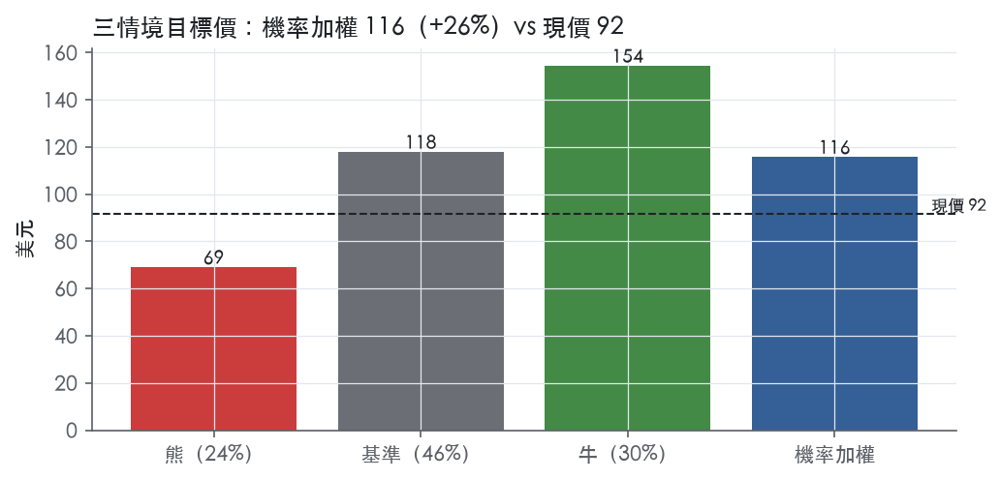
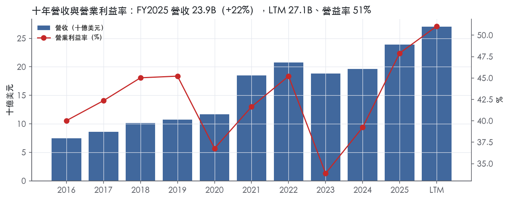
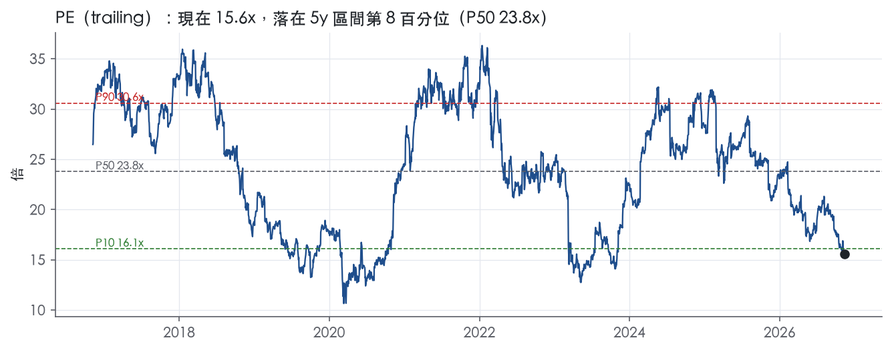
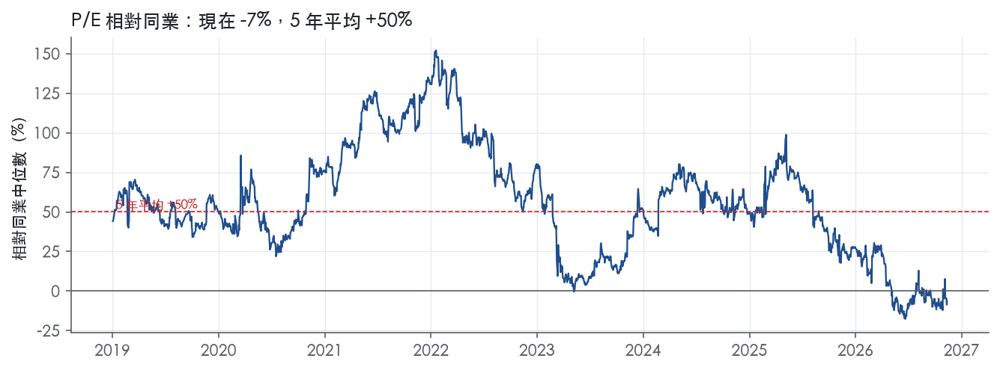
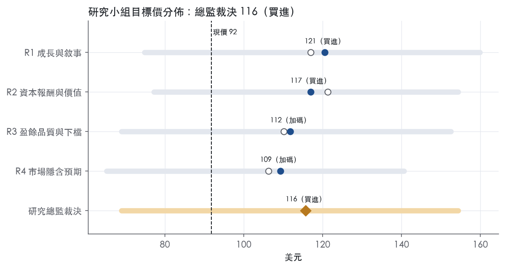
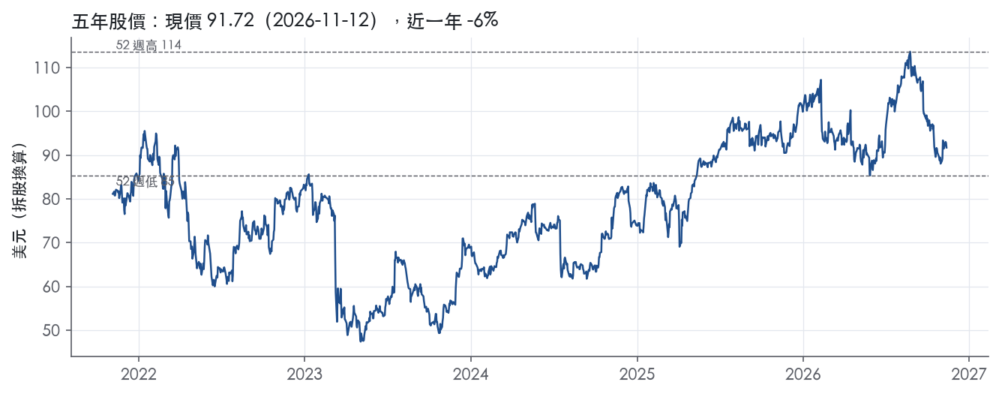

評等總表 › 金融 › SCHW
市場押2023重演缺條件，16x看多｜評等 買進｜目標價 116
| 報告日 | 評等 | 目標價 | 當時股價 | 超額報酬 |
|---|---|---|---|---|
| 2026-11-12 | 買進 | 116 | 91.72 | +17.5% |
| 2026-10-30 | 買進 | 116 | 88.05 | +23.0% |
| 評等 | 買進（邊界，鄰近加碼） |
| 12 個月目標價 | 116 美元 |
| 現價 | 91.72 美元（2026-11-12） |
| 預期報酬 | 股價 +26.2%＋股息 1.3%＝總報酬 +27.5%；同業籃門檻 10.0%，超額 +17.5% |
| 估值方法 | P/E 16.0x，套在第 5–8 季的EPS（也就是一年後的未來四季） |
| 三情境 | 熊 69／基準 118／牛 154 |
| 研究流程 | 四位研究員兩輪辯論＋研究總監裁決 |
| 資料來源 | SEC EDGAR XBRL、Tiingo、FRED（全免費） |
市場押2023重演缺條件，16x看多（研究總監裁決，四位研究員兩輪辯論後）
評等 買進（邊界，鄰近加碼）｜12 個月目標價 116 美元（總監三情境機率加權 117 與研究員中位數 114 各半）｜現價 91.72（2026-11-12）
預期報酬：股價 +26.2%＋股息 1.3%＝總報酬 +27.5%。同業籃門檻 10.0%，超額 +17.5%，離加碼的分界不到三個百分點，屬邊界評等（落在其他級距的機率約三成）。
估值方法：P/E 16.0x，套在第 5–8 季的EPS（也就是一年後的未來四季）。三情境：熊 69（24%）／基準 118（46%）／牛 154（30%）。
什麼會讓研究總監改變看法：4Q26 sweep現金季減逾15B且NIM跌破2.90%（假設門檻）轉中性、倍數退回市場現行13.2x；GAAP Tier 1回到9%以上且單季回購回到1.5B（假設門檻）則撤回資本扣分、倍數上調至P25 17x。
| 過去四季（實際，FY2026Q3） | 未來四季 | 第 5–8 季 | 第 9–12 季 | |
|---|---|---|---|---|
| 營收（B） | 27.1B | 30.0B | 32.4B | 34.4B |
| 營收成長 | 18.1% | 11.0% | 8.0% | 6.0% |
| 營業利益率 | 51.0% | 52.0% | 51.5% | 51.0% |
| EPS（美元） | 5.89 | 6.78 | 7.37 | 7.86 |
| EPS 成長 | 35.9% | 15.2% | 8.6% | 6.7% |
| 每股股息（美元） | 1.23 | 1.23 | 1.23 | 1.23 |
| P/E（現價） | 15.6x | 13.5x | 12.5x | 11.7x |
| 股息殖利率（現價） | 1.3% | 1.3% | 1.3% | 1.3% |
過去四季為申報數字；預測為研究總監的假設、程式計算。倍數與殖利率都用現價計算，用來看現價對應各期獲利的高低。
| 項目 | 上次（2026-11-01） | 這次（2026-11-13） | 變動 |
|---|---|---|---|
| 評等 | 買進 | 買進 | ＝ |
| 機率加權目標價（美元） | 116 | 116 | -0.1% |
| 超額報酬 | 23.0% | 17.5% | -5.5 pp |
| 目標倍數 | 16x | 16x | — |
| 未來四季營收成長 | 13.0% | 11.0% | -2.0 pp |
| 未來四季營益率 | 51.5% | 52.0% | +0.5 pp |
| 未來四季 EPS（美元） | 6.56 | 6.78 | +3.5% |
| 熊／基準／牛機率 | 25／45／30 | 24／46／30 | — |
程式計算；「未來四季」各自從當次報告的資料起點算。研究總監逐點說明見第八章「與上次報告比較」。
| 情境 | 機率（歷史） | 故事 | 未來四季營收成長 | 第 5–8 季營益率 | 倍數 | 目標價 | 股價漲跌 |
|---|---|---|---|---|---|---|---|
| 熊 | 24%（21%） | 本行下行路徑（2年期3.90、失業率5.1、利差2.30）：股市下跌、多空策略融資去槓桿、現金轉出壓縮NII、PAL信用成本浮現（風險表第1、3條），固定成本去槓桿、回購全停，倍數停在市場現行折價 | -4.0% | 46.0% | 13.0x | 69 | -24.8% |
| 基準 | 46%（47%） | 營收降回有機成長加NII持平、費用9%使利潤率自52%小幅回落至51.5%、回購受Tier 1上緣約束，倍數由13.2x部分修復至帶P10–P25 | 11.0% | 51.5% | 16.0x | 118 | 28.5% |
| 牛 | 30%（32%） | 本行基準利率路徑（聯邦基金4.38、2年期4.61整年不降）下NII守住，核心淨新資產與PAL成長延續、費用增速低於營收使3Q26利潤率延續，市場撤回2023重演定價，倍數回到帶P50下方 | 15.0% | 53.0% | 19.0x | 154 | 68.3% |
目標價由程式依研究總監的驅動與倍數計算；機率由研究總監給定。括號內是歷史頻率：把這檔股票過去十年 12 個月報酬的波動形狀，置中在基準情境，結果落在各情境附近的比例。

四位研究員用不同方法各自估值，回應研究總監的質疑後交出第二輪，最後由總監逐點裁決。各研究員的主張見第七章，裁決理由見第八章，完整論證見《研究底稿》。
| 立場（一輪→二輪） | 加權目標價（一輪→二輪） | 評等（一輪→二輪） | 第二輪倍數 | 熊～牛目標價 | |
|---|---|---|---|---|---|
| R1 成長與敘事 | 看多→看多 | 117→121 | 買進→買進 | 16.0x | 75～160 |
| R2 資本報酬與價值 | 看多→看多 | 121→117 | 買進→買進 | 16.0x | 77～154 |
| R3 盈餘品質與下檔 | 中性→看多 | 110→112 | 加碼→加碼 | 15.0x | 69～153 |
| R4 市場隱含預期 | 看多→看多 | 106→109 | 加碼→加碼 | 14.5x | 65～141 |
| 研究總監裁決 | 看多 | 116 | 買進 | 16.0x | 69～154 |
目標價由程式依各自的驅動與倍數計算；評等＝機率加權總報酬 − 同業籃門檻。
Schwab 是一家儲蓄貸款控股公司，透過子公司從事財富管理、證券經紀、銀行、資產管理、託管與財務顧問服務¹。截至2025年12月31日，Schwab管理11.90 trillion美元客戶資產，擁有3,850萬個活躍經紀帳戶、570萬個職場退休計畫參與帳戶及220萬個銀行帳戶¹。公司成立近55年，最初以低成本協助個人投資者接觸金融市場起家，管理層估計美國可投資財富總量超過80 trillion美元，意味著Schwab目前的客戶資產規模仍有巨大成長空間¹。本質上這是一個靠淨利息收入、資產管理費與交易手續費三引擎驅動的「類銀行＋券商」混合體。
Schwab以兩個分部經營：Investor Services（服務個人投資者）與Advisor Services（服務獨立註冊投資顧問RIA）¹。Investor Services涵蓋Retail Investor、Workplace Services（退休計畫、股票計畫服務）、Mutual Fund Clearing Services與Off-Platform Sales¹。Advisor Services則提供RIA託管、交易、銀行及支援服務，Schwab是美國最大的RIA託管服務商之一¹。兩個分部的營收占比10-K未揭露。公司最大的營收來源依序是淨利息收入、資產管理及行政費、交易收入與銀行存款帳戶費¹。以3Q26為例，淨利息收入達3,476M美元，占總營收7,171M美元約48%，其次是資產管理及行政費1,913M美元（約27%）、交易收入1,158M美元（約16%）與銀行存款帳戶費345M美元（約5%）²。產品線包括經紀帳戶、共同基金、ETF、管理投資方案、另類投資、數位資產（加密貨幣ETP、期貨，2026年起擴大加密幣直接交易）、銀行業務（支票儲蓄、房貸、HELOC、質押資產額度PAL）與信託服務¹。公司2025年11月宣布以約660M美元收購私募市場平台Forge Global Holdings，預計2026年3月完成交割，目的是強化私募股權投資能力¹。
客戶光譜從剛開始投資的新手到資產超過10 million美元的超高淨值客戶（Schwab Private Wealth Services）¹。多通路服務模式提供24小時線上、行動、電話與分行服務，確保所有資產等級客戶都能獲得一致服務¹。Advisor Services面向獨立RIA、獨立退休顧問與記錄保管人，Schwab作為託管方賺取與客戶資產相關的淨利息收入與資產管理費，並不向RIA或終端客戶收取託管費¹。公司也服務非美國客戶，提供國際投資能力，並受英國、香港、新加坡及中國等地監管機構管轄¹。地區營收結構10-K未揭露。整體而言客戶結構呈金字塔型——龐大的自助零售基礎撐起規模優勢，上層的Private Client/Wealth與RIA通路貢獻較高毛利的顧問費。
4Q25（截至2025年12月31日）營收6.34B美元，年增18.9%（is.revenue derived；fact id 對照 FY2025Q4 期別），營業利益率50.2%，當季為資料包數據，無新聞稿原文可引用。1Q26營收6.48B美元（dv/is 資料包，期別FY2026Q1），年增15.8%，營益率49.2%。2Q26淨營收達7,072M美元，創紀錄，年增21%，GAAP每股盈餘1.54美元、調整後1.62美元，年增43%／42%³；當季核心淨新資產達120B美元，較去年同期增49%，淨利息收益率季增12個基點至3.00%³。3Q26淨營收達7,171M美元，創紀錄，年增17%，GAAP每股盈餘1.62美元、調整後1.69美元，年增29%²；核心淨新資產達190.4B美元，創紀錄，年增38%，淨利息收益率季增至3.04%²；資產管理及行政費年增14%至1.9 billion美元，交易收入年增16%至1.2 billion美元（原文表述為billion，數字詳見逐季表）²。兩個季度公司皆未提供明確的下季財務指引，僅重申核心資產成長與客戶參與度的質化展望。綜合來看，過去四季營收與EPS連續創紀錄，且年增率逐季維持在15%至21%區間，淨利息收益率穩步擴張，顯示升息環境與資產成長的雙重順風尚未消退。
公司的策略稱為「Through Clients' Eyes」，強調把客戶觀點放在第一位，透過打破產業慣例與提供更優服務來創造「no trade-offs」的投資體驗¹。管理層認為發展信任關係將帶來更多新舊客戶資產，進而驅動營收成長，搭配費用紀律與資本管理，創造盈餘成長與長期股東價值¹。公司列出的核心競爭優勢包括規模與體量、營運效率、涵蓋銀行／財富／資產管理的經營結構、品牌與企業信譽、服務文化，以及「願意顛覆」的企業精神¹。在3Q26新聞稿中，CEO Rick Wurster強調「我們提供新能力與解決方案，領先的價值主張持續引起投資者與RIA的共鳴」，並點名Pledged Asset Line餘額年增59%至37.3B美元、Schwab Wealth Advisory淨流入成長55%作為深化客戶關係的證據²。公司也提到推出AI助理Charley、與Anthropic合作將Claude for Financial Advisors導入RIA通路、擴大Schwab Crypto的加密貨幣交易範圍，作為產品創新的具體動作²³。整體看，Schwab的成長故事建立在「低成本規模優勢＋多元收入流」的飛輪上——淨新資產持續以年化5–6%成長，加上升息循環尾聲仍維持淨利息收益率擴張，是過去四季盈餘加速的主因。往後觀察重點在於聯準會降息路徑若啟動，淨利息收入這個最大營收項目是否能靠資產管理費與交易收入的結構性成長來對沖。Forge收購若順利完成，將是公司首次系統性切入私募市場賽道，但規模相對集團營收仍小，短期財務貢獻有限。

Schwab 的護城河評為「寬」，趨勢「穩定」。護城河來自兩處：一是規模帶來的成本優勢，二是 RIA 託管與職場退休計畫的轉換成本，品牌作為輔助。量化底稿顯示 ROE 十年平均只比資本成本高 4.2 個百分點，安全邊際比典型寬護城河公司薄，而且有一年跌破資本成本；這是本章維持「寬」評級最大的弱點，下文照實處理。
最硬的優勢是成本優勢，其次是轉換成本，無形資產（品牌）排第三。網路效應與效率規模找不到具體證據，不列入。
成本優勢：公司表示其規模讓營運成本與新投資得以攤提在龐大客戶基礎上¹。公司也表示，規模結合營運效率與跨業務共用基礎設施，形成成本優勢，使其能以具競爭力的價格服務各種規模的客戶¹。資料包上，效率比從 56.7%降到 47.3%，營收成長的同時費用率還在下降，這是規模經濟正在兌現的直接證據。帳戶基礎有 38.5 million 個活躍經紀帳戶¹。
轉換成本：RIA 透過 Schwab 網站處理開戶、資金移轉、資產轉移、交易，網站並保存多年的對帳單、交易確認與稅務報表¹。Schwab 也提供與第三方 CRM、投組管理、下單管理與財務規劃平台的整合¹。RIA 一旦把整個事務所的作業流程與資料建立在這套系統上，更換託管商就得重新走帳戶轉移與系統整合，成本落在 RIA 和其終端客戶身上。職場業務同樣具黏性：Retirement Plan Services 提供受託／託管服務與參與者層級的紀錄保管¹。帳戶規模為 5.7 million 個職場退休計畫參與帳戶¹。
無形資產（品牌）：公司表示，在仰賴信任的產業中，其品牌與信譽有助吸引客戶與員工，並讓新產品推出更具可信度¹。品牌在這裡的作用是降低獲客成本，本身不足以構成定價權，所以只當輔助來源。
數字大致支持寬護城河，但有一處衝突必須正視。
支持的部分：ROE 有資料的 9 年中，有 8 年高於資本成本。ROE 十年平均 14.2%，資本成本代理值 10.0%，利差 4.2%。稅前利益率十年平均 41.7%、標準差 4.1%，最新值 47.9% 是十年最高，代表在利率環境大幅變動的十年裡，利潤率波動仍然收斂。近期 ROTCE 達 45.1%。
衝突的部分：ROE 最低到 8.5%，低於資本成本。稅前利益率最低值 33.9%與 FY2023 營益率 33.9%一致，FY2023 營收也年減 9.3%。這段低谷是利率急升造成客戶現金轉往高收益產品、資金成本上升的週期性衝擊，客戶資產並沒有流失；隨後營益率回升到 47.9%，佐證受傷的是盈利而非客戶基礎。因此維持「寬」評級，但估值研究員應理解：這條護城河保護的是客戶資產與市占，不是盈利的平滑度；ROE 會隨利率週期擺盪。
資料包的 ROIC 欄位不適用：FY2019 出現 -1322.9%，屬於券商／銀行資產負債表造成的計算失真，所以本章改用 ROE 檢驗。
最大的侵蝕風險是利率下行壓縮淨利息收入，其次是低價競爭者與監管門檻。
目標倍數相對同業應給溢價，因為成本優勢與 RIA 轉換成本讓 Schwab 有把握在未來 10 年以上維持 ROE 高於資本成本，也讓客戶資產在利率衝擊下沒有流失。溢價幅度應保守，因為 ROE 平均僅高於資本成本 4.2%，且盈利對利率週期敏感，持續期假設不宜比照輕資產型寬護城河公司。現行 P/E 15.6x 已低於自身 5 年 P10 的 16.1x，市場目前定價的是利率下行風險，而不是護城河受損。
| 指標 | 最新 | 十年平均 | 標準差 | 最低 | 最高 |
|---|---|---|---|---|---|
| ROIC | 31.5% | -125.7% | 423.3% | -1322.9% | 31.5% |
| 營業利益率 | 47.9% | 41.7% | 4.1% | 33.9% | 47.9% |
| FCF 利潤率 | 36.6% | 43.9% | 41.8% | -14.4% | 117.3% |
| ROE | 18.1% | 14.2% | 3.2% | 8.5% | 18.1% |
程式計算。資本成本代理值（10 年債＋5%）：10.0%；ROIC 平均減資本成本：-135.7%；ROIC 有資料的 9 年中，高於資本成本 8 年。
盈餘品質計分表三項（SBC／營收、稀釋股數變動、股東回饋）全部綠燈，且無程式標示的紅旗。資料包本身註明 Schwab 的 CFO、FCF、EBITDA、淨負債「沒有意義，不要引用」，因為這是銀行型資產負債表，現金流量表被存款、保證金放款、客戶應付款等資產負債項目的季節性擺動主導，不是傳統意義上的經營現金流品質問題（量化底稿附註）。真正該看的是淨利息收入／平均總資產、效率比與 ROTCE 這些銀行指標，三者在過去八季全部改善，支撐「中高品質」而非「高品質」的保留態度，保留一檔是因為 Tier 1 槓桿比率在 2025 年走低，資本消耗速度值得追蹤。
不能用傳統 CFO／淨利比率評價這家公司，因為 CFO 在最近八季劇烈擺動——FY2024Q4 為 -10.83B、FY2025Q1 回到 6.36B、FY2025Q4 又轉負 -0.76B、FY2026Q1 再翻正 7.34B（資料包八季表），這種鋸齒狀態是保證金放款、客戶保管現金（sweep）與銀行補充性融資的季節性再平衡造成的，MD&A 明確指出 2025 年保證金放款年底達 112.3B，較年初增 34%，同期銀行補充性融資從 49.9B 降到 5.1B，下降 90%⁴。真正該看的現金指標是淨利息收入／平均總資產，由 FY2024Q4 的 2.1% 一路爬升到 FY2026Q3 的 2.7%（資料包銀行指標表），代表利息收入的「現金」確實隨著放款與資產組合轉移同步成長，不是靠應計堆出來的。效率比同期從 56.7% 降到 47.3%（資料包銀行指標表），說明營運槓桿持續釋放，不是一次性費用削減的假象。
FY2025 全年 GAAP 稀釋 EPS 4.65 美元，調整後 EPS 為 4.87 美元⁴，差距主要來自併購整合費用、無形資產攤銷與重組費用，三者合計 2024 年為 645M 美元，較 2023 年下降 55%，因為 Ameritrade 整合成本已大致出完⁴。3Q26 當季更明確：GAAP 淨利 2,906M、調整後淨利 3,021M，差額 151M 美元全部是「交易相關成本」，包含併購整合費用與收購無形資產攤銷²；單季損益表上無形資產攤銷科目本身就有 141M 美元（9M26 累計 415M 美元）²。我的判斷是：無形資產攤銷是非現金、因收購而產生的會計性費用，加回合理；但併購整合費用（人員與設施退出成本）在 Ameritrade 整合期間連續三年出現，雖然單次金額遞減，仍應視為「準經常性」的真實現金支出，不宜全數加回評價盈餘能力。另外 2023 年 FDIC 特別評估費 172M 美元、2024 年追加 30M、2025 年又沖回 32M⁴，屬於監理一次性事件，加回沒有爭議。ROTCE 與 ROE 的差距（2025 年 38% vs 21%）則是把併購產生的商譽／無形資產從權益基礎中剔除，這個調整反映的是資本效率而非盈餘灌水，可以參考但不能取代 GAAP EPS 做估值。
資本配置呈現「邊擴表邊回饋股東」的雙軌模式。(股利＋回購)／淨利 LTM 為 85.7%，近三年均值 82.9%，均落在綠燈區，FY2025 全年回購 7.3B 美元、股息每股提高 8% 至 0.27 美元，並贖回 2.5B 美元 G 系列特別股⁴，3Q26 單季再回購 0.5B 美元²。稀釋股數 LTM 年變動 -0.3%，三年均值 -1.5%，顯示回購確實淨減少股數而非只是抵銷選擇權稀釋。槓桿面要用銀行自己的尺：合併 Tier 1 槓桿比率從 2024 年底 9.9% 降到 2025 年底 9.3%，調整後（排除 AOCI）Tier 1 槓桿比率則從 6.8% 升到 7.1%，公司長期操作目標區間為 6.75%–7.00%，目前已站上目標區間上緣⁴。3Q26 初步數字顯示合併 Tier 1 槓桿再降至 8.9%，調整後為 7.0%²，意味著在擴大放款、回購股票與維持股息成長三者同時進行下，資本緩衝正在被同步消耗，雖然仍在目標帶內，但已無太多餘裕可以同時加速三項資本動作。
計分表三項全部綠燈，程式本身沒有標出任何紅旗。雖然沒有紅旗，仍有三點需要主動解釋，避免被誤判為隱藏風險：第一，CFO／FCF 數字本身在年度與季度層級劇烈震盪（如 FY2023 CFO 19.59B 對 FY2024 CFO 2.67B）（資料包年度表），這不是盈餘品質惡化，而是資料包已明確排除銀行 CFO 的解讀意義，根因是保證金放款、客戶 sweep 現金與銀行補充性融資的季節性重配置，MD&A 對此有完整說明⁴——結論：假警報，與盈餘品質無關。第二，Tier 1 槓桿比率從 9.9% 降到 9.3%（2024→2025），容易被誤讀為去槓桿化不足，但調整後（排除 AOCI）槓桿比率同期是上升的（6.8%→7.1%），GAAP 比率下滑主因是分母（風險加權資產）隨放款成長擴大，而非資本流失——結論：可解釋，非真問題。第三，SBC／營收與稀釋股數變動雖是綠燈，但十年均值（SBC 1.7%、稀釋股數 +3.9%）高於 LTM（1.3%、-0.3%），顯示過去（尤其是 Ameritrade 併購換股期間）曾有較明顯的股數膨脹，近三年回購已把趨勢反轉——結論：歷史現象，目前趨勢已修正，非當前風險。
估值應以 GAAP 稀釋 EPS 為主軸，非 GAAP 調整後 EPS（FY2025 的 4.87 對 GAAP 4.65）可作為交叉參考，但併購整合費用屬於多年期真實現金支出，不宜整筆加回盈餘基礎。盈餘品質三項指標全線綠燈且無未解釋紅旗，不需要對盈餘打額外折扣，P/E 15.6x 相對十年中位數 24.4x 已隱含市場對淨利息收入週期性的保守預期，而非盈餘品質疑慮。槓桿面不構成限制倍數的理由——調整後 Tier 1 槓桿比率正在改善且仍在公司自訂目標區間內，但資本同時用於擴表、回購與股利成長，若放款成長持續加速，估值模型應預留資本緩衝收窄、回購速度放緩的情境，而非對當期盈餘打折。
| 項目 | LTM | 近三年 | 十年 | 燈號 | 規則 |
|---|---|---|---|---|---|
| SBC／營收 | 1.3% | 1.6% | 1.7% | 綠 | ≤3.0% 綠、>8.0% 紅 |
| 稀釋股數年變動 | -0.3% | -1.5% | 3.9% | 綠 | ≤0.0% 綠、>3.0% 紅 |
| （股利＋回購）／淨利 | 85.7% | 82.9% | 58.6% | 綠 | ≥50.0% 綠、<0.0% 紅 |
程式計算；燈號以 LTM（無則近三年平均）判定。
| 風險 | 觸發指標（看什麼數字、在哪裡看） | 對 EPS 的影響方向與粗略幅度 | 未來 12 個月發生機率（高／中／低） | 出處 |
|---|---|---|---|---|
| 淨利息收入對降息與客戶現金轉出的敏感度 | 聯準會基準利率（fed_funds，現 3.88%）；每季淨利息收益率（3Q26 季增至 3.04%）；client transactional sweep cash balance（3Q26 末 492.8B 美元） | 負向，大；淨利息收入是公司最大營收來源，3Q26 單季年化淨利息收入 3.48B 美元 | 高 | ²＋【判，fed_funds 來自 】 |
| 監管資本與銀行規模門檻升級（Category III→II） | 總合併資產規模（2025 年底 491B 美元，門檻 700B）；跨境業務規模（31B 美元，門檻 75B）；CCAR 壓力資本緩衝結果 | 負向，中；若升至 Category II，須納入 AOCI 計入監理資本、適用進階風險權重，資本要求上升可能限制股票回購與股利 | 中 | 10-K 年報 FY2025 Item 1（業務） |
| 銀行放款快速擴張下的信用資產品質不透明 | 銀行放款餘額（3Q26 月末 72.3B 美元，年增 35%）；備抵／放款比率與淨沖銷率（資料包多期顯示「—」，未揭露） | 負向，中；放款基數快速放大但信用成本率、淨沖銷率在近八季資料中大多缺值，一旦景氣轉弱、提列上升會直接吃掉淨利息收入的增量 | 中 | ²＋【判，fact id dv.credit_cost／dv.nco_rate 多期缺值】 |
| 銀行存款帳戶費單一依賴 TD Depository Institutions 的協議 | 2023 IDA 協議續約或修訂公告；銀行存款帳戶費（bank deposit account fees）揭露金額 | 負向，中；此費用全部依賴與 TD Bank USA／TD Bank 的單一協議，協議條件變動或終止會直接衝擊該項收入線 | 低 | 10-K 年報 FY2025 Item 1（業務） |
| Forge Global 併購整合費用與執行風險 | 併購相關一次性費用（3Q26 已認列 151M 美元稀釋 adjusted EPS）；交割時程（原訂 2026 年 3 月完成，是否延後或追加對價公告） | 負向，小；GAAP EPS 1.62 美元已反映 151M 美元稅前交易成本，若整合不順，費用率上升會持續侵蝕利潤率 | 低 | ²＋¹ |
淨利息收入對降息與客戶現金轉出的敏感度。 淨利息收入是 Schwab 最大的淨營收來源，主要資金來源是客戶未投資現金餘額，資產端主要是高評級固定收益證券、融資融券貸款與銀行放款¹。3Q26 淨利息收益率季增至 3.04%、平均生息資產年增 8% 至 451.5B 美元，是過去幾季盈餘加速的主因²。問題在於這個順風是建立在高利率平台上——目前聯邦基金利率 3.88%，一旦進入降息周期，利差會壓縮，而且客戶也可能把低息的 sweep cash 轉往貨幣市場基金或其他高收益產品，兩個方向同時作用在同一條收入線上。3Q26 末 client transactional sweep cash balance 達 492.8B 美元，季增 7.1B 美元，公司自己說明增量部分被「客戶資產配置決策」抵銷，顯示現金轉出壓力並未消失，只是暫時被長短倉策略需求蓋過²。
監管資本與銀行規模門檻升級。 CSC 目前適用 Category III 監理框架，門檻是總合併資產介於 250B 至 700B 美元、跨境活動低於 75B 美元；2025 年底總資產約 491B 美元、跨境活動約 31B 美元，距離 700B 門檻還有空間但成長速度不慢¹。若四季平均總資產達到 700B 美元或跨境活動達 75B 美元，公司將被重新歸類為 Category II，屆時不能再選擇排除 AOCI 計入監理資本，且需適用更嚴格的風險權重計算¹。公司 2025 年 CCAR 結果顯示其壓力資本緩衝落在 2.5% 的樓板，已是最低值、沒有再往下的空間，代表任何資本要求上調都會直接限制股票回購與股利能力¹。
銀行放款快速擴張下的信用資產品質不透明。 3Q26 銀行放款餘額達 72.3B 美元，年增 35%，成長速度明顯快於整體資產²。但資料包裡近八季的信用成本率、淨沖銷率、備抵覆蓋率多數顯示缺值，無法用現有揭露確認放款品質是否跟得上規模成長【判，對照資料包 dv.credit_cost／dv.nco_rate 多期為「—」】。放款組合包含第一順位房貸、HELOC 與 PAL，PAL 餘額 3Q26 年增 59% 至 37.3B 美元，屬於以證券質押為擔保但對市場波動敏感的貸款類別²。一旦資產價格大幅下跌，質押品價值下滑可能同時推升信用成本並壓縮淨利息收入。
銀行存款帳戶費單一依賴 TD Depository Institutions 協議。 公司的銀行存款帳戶費幾乎完全依照與 TD Bank USA 和 TD Bank 簽訂的 2023 IDA 協議認列，未投資的經紀客戶現金被掃出資產負債表存入該協議下的存款帳戶¹。這是一個高度集中於單一對手方的收入來源，協議條款的任何修訂、終止或重新議價都會直接衝擊這項費用收入，而公司對此沒有分散的替代安排可供對照。
Forge Global 併購整合費用與執行風險。 公司以約 660M 美元收購私募市場平台 Forge Global，原訂 2026 年 3 月完成交割，目的是補強私募股權投資能力¹。3Q26 財報已經認列 151M 美元稅前的併購與整合相關費用，使 GAAP 每股盈餘低於調整後的 1.69 美元²。相對於集團 7.2B 美元的單季淨營收，這筆交易金額不大，財務衝擊有限，但整合成本若超出預期或交割延後，會持續拖累 GAAP 利潤率。
客戶保證金貸款與長短倉策略集中度。3Q26 融資融券貸款餘額季增 14% 至 187.9B 美元，其中 60.7B 美元與 RIA 使用的長短倉策略相關，這部分貸款與相應的放空信用被排除在利息收益資產與資金來源的常規揭露之外，形成一塊規模不小、但計算口徑特殊的風險敞口，一旦市場劇烈波動觸發保證金追繳，對流動性與信用損失的影響難以從目前揭露的指標直接推算²。
加密貨幣與數位資產業務擴張的操作與監理風險。公司計劃 2026 年起擴大 Schwab Crypto 可交易的加密貨幣種類，並已提供加密貨幣 ETP、選擇權與期貨¹。這是一個監理框架仍在演變、公司過去沒有大規模經營經驗的新業務線，操作風險與未來監理政策變動（例如 SEC 或銀行監理機關對加密資產託管、資本計提的新規則）目前在 10-K 風險因子章節摘要中未被單獨量化揭露。
現價 91.72 對應 trailing（過去四季）P/E 15.6x、EV/EBITDA —、EV/EBITA 10.2x、EV/Sales 5.4x、FCF 殖利率 7.4%。主要估值倍數 P/E 現在 15.6x，落在5 年區間第 8 百分位（P10／P50／P90 = 16.1x／23.8x／30.6x）。

把程式的機械基準預測放到現價下，市場付的前瞻倍數是：P/E（未來四季） 13.2x、P/E（第 5–8 季） 11.5x。反推 DCF 顯示市價隱含未來五年營收年成長 -1.5%（WACC 9.0%、終值成長 3.0%、FCF 利潤率 40.8%，SBC 不加回）。
| 倍數 | 現在 | 5 年 P10 | 5 年 P50 | 5 年 P90 | 現在分位 | 全期 P50 |
|---|---|---|---|---|---|---|
| P/E | 15.6x | 16.1x | 23.8x | 30.6x | 8.1% | 24.4x |
| EV/EBITDA | 6.1x | — | — | — | — | 8.3x |
| EV/EBITA | 10.2x | 7.8x | 13.8x | 19.0x | 19.1% | 13.0x |
| EV/EBIT | 10.6x | 8.4x | 14.7x | 20.6x | 18.1% | 13.8x |
| EV/Sales | 5.4x | 3.6x | 6.2x | 7.6x | 28.9% | 6.2x |
| P/S | 5.9x | 5.1x | 7.2x | 8.2x | 16.4% | 7.2x |
| P/FCF | 13.6x | 7.1x | 16.5x | 90.7x | 33.4% | 16.6x |
trailing 倍數（股價 ÷ 過去四季）；分位以每個交易日計算。
同業籃：IBKR, HOOD, RJF, LPLA, MS（手動名單（playbooks/peers.yaml））。評等門檻 10.0%：同業「倍數不變下持有一年」的隱含報酬中位數（＝ FCF 殖利率 ×(1＋g)＋g，g 為 5 年營收年複合成長並夾在 −2%～8%），每家夾在 0～15%、P/E 低於 5 倍視為資料可疑而排除，中位數再限制在 10 年債到 10 年債＋5% 之間（同業原始中位數 14.5%）。
| 代號 | 市值 | 5 年營收 CAGR | 營益率 | ROIC | P/E | 5 年 P/E 中位數 | EV/EBITDA | P/FCF | 隱含報酬 |
|---|---|---|---|---|---|---|---|---|---|
| SCHW | 159.0B | 15.4% | 51.0% | 31.5% | 15.6x | 23.8x | — | 13.6x | 14.9% |
| IBKR | 36.9B | 22.8% | 77.8% | — | 17.4x | 12.0x | — | — | 14.2% |
| HOOD | 74.1B | 36.1% | 47.3% | — | 37.5x | — | 28.4x | — | 10.9% |
| RJF | 32.1B | 14.3% | — | — | 14.6x | 14.7x | — | 22.3x | 15.4% |
| LPLA | 23.1B | 23.7% | 9.2% | 9.1% | 16.7x | 25.4x | 12.8x | 22.9x | 14.5% |
| MS | 296.1B | 7.7% | 33.2% | 5.4% | 14.9x | 15.4x | 17.4x | — | 14.9% |
| 同業中位數 | 22.8% | 40.3% | 7.3% | 16.7x | 15.1x | 17.4x | 22.6x | 10.0% |
全部 trailing，程式以各公司 SEC XBRL 與 Tiingo 行情計算；第一列為本檔。
P/E 相對同業中位數：現在 -6.8%，過去 1 年平均 6.5%、3 年 40.3%、5 年 50.4%。

事後實現前瞻倍數帶（P/E，2018-11-19..2025-11-17）：P10／P50／P90 = 15.2x／19.3x／24.4x。它是每個交易日的股價除以之後四季實際實現的指標；一年後，今天的第 5–8 季正是那時的未來四季，所以這條帶是 12 個月目標價的同口徑倍數。因為用的是事後實際而非當時預期，過去成長超乎預期的公司這條帶會偏低。
程式的機械基準（成長率從過去四季年增率三年收斂到 6%、利潤率持平）用 事後實現前瞻 P/E P50 估值得到 154（67.7%），市場現行前瞻倍數（現價 ÷ 基準 未來四季指標）一年後持平，套在基準 第 5–8 季指標得到 105。這兩個數字只是參考點，不是本報告的目標價；研究員對這個定價的回應在第七章。
下表是每位研究員第一輪（各自獨立）與第二輪（回應研究總監的質疑後）的結果。目標價全由程式依各自的假設計算。
| 立場（一輪→二輪） | 加權目標價（一輪→二輪） | 評等（一輪→二輪） | 第二輪倍數 | 熊～牛目標價 | |
|---|---|---|---|---|---|
| R1 成長與敘事 | 看多→看多 | 117→121 | 買進→買進 | 16.0x | 75～160 |
| R2 資本報酬與價值 | 看多→看多 | 121→117 | 買進→買進 | 16.0x | 77～154 |
| R3 盈餘品質與下檔 | 中性→看多 | 110→112 | 加碼→加碼 | 15.0x | 69～153 |
| R4 市場隱含預期 | 看多→看多 | 106→109 | 加碼→加碼 | 14.5x | 65～141 |
| 研究總監裁決 | 看多 | 116 | 買進 | 16.0x | 69～154 |
目標價由程式依各自的驅動與倍數計算；評等＝機率加權總報酬 − 同業籃門檻。
分歧度：第一輪 加權目標價 106～121（區間＝現價的 16%）· 倍數 14.5～17x · 立場 看多×3、中性×1；第二輪 加權目標價 109～121（區間＝現價的 12%）· 倍數 14.5～16x · 立場 看多×4（方向一致）。

| 研究員 | 第二輪主張 | 堅持的理由 |
|---|---|---|
| R1 成長與敘事 | 看多，16倍；營收首年11%、第二年9%，利潤率升到52%。 | 資產管理費年增14%可延續，第三年營收成長7%，高於基準6%。 |
| R2 資本報酬與價值 | 看多，16倍；利潤率回到基準51%，股數年減1.5%。 | FY2025回購7.3B美元靠一次性資本釋放，今後回購只能靠留存盈餘。 |
| R3 盈餘品質與下檔 | 溫和看多，15倍；熊情境營收−4%、利潤率45%、13倍。 | 盈餘建在高於十年最高47.9%的利潤率上，倍數應再低一檔。 |
| R4 市場隱含預期 | 看多，14.5倍；費用年增9%下，利潤率由52%降到51%。 | 市場現行13.2倍等於定價利潤率崩落，市場錯在利潤率方向。 |
每位研究員的逐條回應與完整論證見《研究底稿》（SCHW_研究底稿_2026-11-13.docx）。
| 分歧點 | R1 成長 | R2 價值 | R3 品質 | R4 預期 | 什麼資料會分出勝負 |
|---|---|---|---|---|---|
| Q5–Q8 營收成長（rev_growth_y2） | 9%：資產管理費年增 14% 可延續 | 7%：NIM 擴張收斂、GDP 1.8 交易降溫 | 7%：交易收入已過週期高點 | 8%：營收降回有機成長、NIM 持平 | 1Q27 交易收入年增率與 4Q26 NII 年增率 |
| 營益率路徑（op_margin_y1–y3） | 51.5／52／52：費用 9.5／8／7% | 51／51／51：回基準，自承無機制 | 52／51.5／51：高原但不外推 | 52／51.5／51：費用 9／9／7% | 4Q26 GAAP 稅前利益率（基期 50.2%）與非利息費用年增率 |
| 股數年變動（share_change_pct） | −3%：留存盈餘可撐 | −1.5%：3Q26 回購 0.5B、FY2025 7.3B 是一次性資本釋放 | −2%：資本優先擴表 | −2.5%：Category II 門檻前先累積資本 | 4Q26 回購金額與調整後 Tier 1 槓桿 |
| 目標倍數（eps@q5_q8） | 16x：帶 P10–P25 | 16x：帶 P10–P25，需 4Q26 NII 驗證 | 15x：P10 略下方，高峰利潤率 | 14.5x：P10 下、市場現行 13.2x 上 | 4Q26 NII 年增且 NIM ≥ 2.95%；sweep 現金是否流出 |
| 熊情境深度與倍數 | 3%／45%／13x | 0%／46%／14.5x | −4%／45%／13x | 3%／47%／11.5x | 失業率是否走向 5.1；PAL／HELOC 淨沖銷率 |
分歧 1：Q5–Q8 營收成長——選 R4 的 8%。 四人都把 NTM 收斂到 11%，第二年分歧在交易收入與 NII 的續航力。R1 的 9% 靠資產管理費年增 14%²外推，但 3Q26 日均交易量 10.7 百萬筆、年增 44%²是週期高檔，到 Q5–Q8 基期已墊高，費用型收入撐不起整體 9%。R2、R3 的 7% 低於基準 10% 三個百分點，理由只有「NIM 擴張收斂」與「交易過高點」，沒有把核心淨新資產年化 5.8%、平均生息資產年增 8%²和本行「政策利率 4.38 整年不降、NII 有撐」的前提放進來；NII 占 3Q26 營收 48%【業務概況章】，不降息路徑下它至少跟著生息資產走。R4 的 8% 同時放進交易降速與 NII 持平，他的營收預測紀錄絕對誤差中位數 2.1%、勝過基準 57%，是四人中最準。
分歧 2：營益率路徑——選 R4／R3 的 52.0／51.5／51.0%。 R2 回到基準 51% 持平，自承「拿不出機制」，他的營業利益紀錄誤差中位數 −4.8% 是四人中最系統性偏低，按紀錄要往上修。R1 的 y2、y3 52% 要求費用年增降到 8%、7%，但 3Q26 費用年增 9%²，Forge 整合、加密與 AI 投入都在費用線上，沒有證據支持連續兩年減速。R4 的路徑：y1 52% 落在最近兩季 51.9%、52.7%之間、不外推新高；y2 營收降到 8% 而費用仍 9%，營運槓桿轉負回落到 51.5%；y3 回基準 51%。R4 的營業利益紀錄誤差中位數 +0.2%、勝率 74%；R3 用不同材料（財務體質章）走到同一組數字，採用。
分歧 3：股數年變動——選 R2 的 −1.5%。 R2 看的材料最直接：3Q26 回購 4.7 百萬股、0.5B²；FY2025 的 7.3B 回購發生在補充性融資 49.9B 降到 5.1B、資產負債表騰出空間的年份⁴，不能外推；調整後 Tier 1 槓桿 7.0% 已在目標區間 6.75%–7.00% 上緣²。財務體質章量化底稿顯示稀釋股數 LTM 年變動 −0.3%、三年均值 −1.5%，−1.5% 正是已實現速度。R1 的 −3% 要回購回到 FY2025 的速度，但銀行放款年增 35%、保證金貸款季增 14%²持續吃資本，R1 自己也寫「沒有超額資本可以加速買回」，數字與他的證據不一致。R4 的 −2.5% 同樣高於已實現速度。
分歧 4：目標倍數——選 R1／R2 的 16x，理由以本裁決為準。 錨是事後實現前瞻 P/E 帶（q5_q8 同口徑）P10 15.2x 與 P25 16.6x 之間【估值劇本】。不取 P50 19.3x 只用個股因素：(a) Q5–Q8 EPS 建在 51.5–52% 利潤率上，高於十年最高 47.9%；(b) 資本約束——調整後 Tier 1 在目標上緣、單季回購降到 0.5B²，盈餘成長被資產負債表化；(c) 帶的 P50 含 2022–2023 EPS 下行期，事後實現口徑在那段偏高。不取 P10 以下：市場現行前瞻倍數 13.2x低於帶 P10，等於定價 FY2023 重演（營收 −9.3%、營益率 33.9%），但本行前提政策利率整年不降，重演缺實現條件；3Q26 NIM 升到 3.04%、sweep 現金 492.8B 季增 7.1B²，資金來源沒有流失；護城河章確認 FY2023 受傷的是盈利不是客戶資產。R3 的 15x 把「高峰利潤率」放進倍數，但他的利潤率路徑同樣從 52% 回落到 51%，等於在盈餘與倍數各扣一次。R4 的 14.5x 要點出：他與 R1、R3 都把「帶的樣本期含零利率年份」列為壓低倍數的理由——這是利率論點，現價與門檻已反映 4.98 的 10 年債，本裁決不採；扣掉利率，R4 剩下「週期高檔交易收入」，已在分歧 1 的 y2 8% 處理，再壓倍數是重複計算。相對同業：同業表是 trailing 口徑，只看方向——SCHW 對財富管理組（MS 14.9x、RJF 14.6x、LPLA 16.7x）由 5 年平均溢價 50.4% 轉為折價 −6.8%（同業比較表），16x 相當於恢復小幅溢價，與護城河章「溢價但保守」一致。
分歧 5：熊情境——選 R3。 R3 是唯一看得到風險章與 10-K 風險因子的人，熊情境對應風險表第 1 條（NII 對降息與現金轉出）與第 3 條（放款年增 35%、PAL 年增 59% 的信用品質不透明）。營收 −4% 比 FY2023 的 −9.3% 淺，理由成立：本行下行路徑政策利率 3.88 不是零利率，補充性融資已降到 5.1B⁴，FY2023 的兩個機制都不在；利潤率 45% 位於十年平均 41.7% 與最高 47.9% 之間（護城河章量化底稿），是 EPS 降檔不是資本破洞。倍數 13x 介於市場現行 13.2x 與零報酬 11.5x 之間——熊情境實現時市場維持今天的折價，合理。R4 的 11.5x 等於零報酬倍數，意味市場對衰退盈餘付得比今天更低，而 FY2023 盈餘下行期 trailing P/E 反而偏高（23.8x），沒有證據。R2 的 14.5x 自訂機制、沒有風險章，不取。
漂移處理。 四人第二輪修正都對應第一輪審查意見並附證據（接受意見 5／5、5／5、6／6、5／5），向中位數靠攏比例最高為 R2 的 39%，低於門檻。R1 加權目標上移 3.0% 是口徑由 ntm 改為 q5_q8 造成，他的營收與利潤率都下修，不是向上漂移。本輪無退回。
總經偏離。 四人 macro_deviations 均為空，無需逐條裁決。一處路徑選擇要修正：R1 把牛情境放在本行「上行」路徑（聯邦基金 4.12、2 年期 4.30），對 NII 占 48% 的 SCHW 是利率逆風；R2 放在本行基準利率路徑（4.38／4.61），符合「取對這家公司有利的路徑」，本裁決牛情境採 R2。本行金融指引要求放款曝險高者上調撥備：SCHW 放款 72.3B 以證券質押為主，不是槓桿放款，基準情境不另加撥備，信用成本放進熊情境（風險表第 3 條）。總經敏感度：2 年期前提隱含影響 +0.0%，信用利差 t 值 −1.3 不採用，基準情境方向與前提隱含效果不衝突。
| 驅動 | 機械基準 | 裁決 | 理由 |
|---|---|---|---|
| rev_growth_y1 | 14.1% | 11.0% | 四人一致：3Q26 利息費用 997M 高於去年同季 906M²，補充性融資的負債成本順風已出盡；營收年增率由 2Q26 20.9% 降到 3Q26 16.9%（資料包八季表） |
| rev_growth_y2 | 10.0% | 8.0% | 分歧 1 |
| rev_growth_y3 | 6.0% | 6.0% | 同基準 |
| op_margin_y1／y2／y3 | 51.0%×3 | 52.0／51.5／51.0% | 分歧 2 |
| share_change_pct | −4.3% | −1.5% | 分歧 3 |
| D&A、資本支出、SBC、稅率 | 4.3／2.9／1.3／22.8% | 同基準 | 無人提出異議 |
目標倍數 16x，GAAP EPS @ q5_q8。口徑：事後實現前瞻帶是「t 日股價 ÷ 之後實際實現」，與 q5_q8 主尺同口徑，直接比較不換算；trailing 帶與同業表對應 ntm，只用來判斷方向。錨與相對同業的處理如分歧 4：帶 P10–P25 之間，對財富管理組恢復小幅溢價，扣分項全是個股因素（高峰利潤率、資本約束、帶 P50 的構造偏誤），不含利率。
牛（30%，取 R2）：營收 15／10／7%、營益率 53%、股數 −2.5%、19x。理由：R2 的牛情境有公司特有的盈餘上行——核心淨新資產 190.4B 創紀錄、PAL 年增 59%²——而非只靠重新評價；19x 停在帶 P50 19.3x 之下；路徑設在本行基準利率（4.38／4.61 整年不降），是對 NII 最有利的一組。不取 R1 牛（利潤率 54% 超過所有 GAAP 觀測值、路徑在利率逆風的上行情境），不取 R3 牛（股數 −3.5% 與資本約束矛盾）。
基準（46%）：上節假設，16x。
熊（24%，取 R3）：營收 −4／3／4%、營益率 45／46／47%、股數 0、13x；對應風險表第 1、3 條；路徑是本行下行（2 年期 3.90、失業率 5.1、利差 2.30）：股市下跌、多空策略融資去槓桿、現金轉出壓縮 NII、PAL 信用成本浮現、回購全停。
機率從本股歷史基準率出發。 R2 的牛情境在他的基準上距離 +33%，程式對照歷史頻率 30%；本裁決倍數與 R2 相同、利潤率略高，距離相近，牛取 30%，與歷史一致。熊取 R3 的 68.97（程式結果表），而本裁決基準高於 R3 的 110.30（16x 對 15x），熊相對基準的距離比 R3 的 −37% 更遠，接近 R1、R4 的 −39%／−40%，對應歷史 22–23%；本行下行情境機率 25%，但熊情境還要求風險表第 1、3 條同時發作，比單純衰退窄，取 24%，落在歷史與本行前提之間。牛 30% 高於熊 24%，順序與本股歷史一致，也修正本部門 22 份報告熊高於牛的慣性。精確對照以程式結果表為準，若偏離超過 10 個百分點，向歷史修正。
差距主要在倍數：市場現行前瞻倍數 13.2x（NTM）／11.5x（Q5–Q8）低於帶 P10，押的是 NII 從高峰懸崖式回落；我們押本行不降息路徑下 NII 跟著生息資產走、利潤率守在 51.5–52%，倍數回到帶 P10–P25。盈餘上我們反而比機械基準保守（y1 營收 11% 對 14.1%、股數 −1.5% 對 −4.3%），只在 y1 利潤率高出一個百分點。立場看多；四位研究員在 14.5–16x 下超額已達 +10.5% 到 +22.8%（程式結果表），本裁決在 16x 下評等應與看多一致。
現價 91.72 → 點估目標價 118 → 機率加權目標價 117 → 目標價 116，差距拆成五段：成長順延 +14 美元（市場現行倍數 13.2x 一年後持平、獲利照機械基準）；倍數差 +22 美元（總監倍數 16.0x vs 市場持平倍數 13.2x，同一機械基準預測）；盈餘差 -10 美元（總監預測的第 5–8 季EPS 0.0B vs 機械基準 0.0B，同一倍數）；情境不對稱 -1 美元（機率加權減點估）；研究小組平均 -1 美元（總監機率加權 117 與研究員第二輪中位數 114 各半）。各段相加等於目標價減現價。本階段未接賣方共識，差距以市場隱含預期為對照。
| 驅動 | 機械基準 | 研究總監 | 差異 |
|---|---|---|---|
| 未來四季營收成長 | 14.1% | 11.0% | -3.1 pp |
| 第 5–8 季營收成長 | 10.0% | 8.0% | -2.0 pp |
| 第 9–12 季營收成長 | 6.0% | 6.0% | ＝ |
| 未來四季營益率 | 51.0% | 52.0% | +1.0 pp |
| 第 5–8 季營益率 | 51.0% | 51.5% | +0.5 pp |
| 第 9–12 季營益率 | 51.0% | 51.0% | ＝ |
| D&A／營收 | 4.3% | 4.3% | ＝ |
| 資本支出／營收 | 2.9% | 2.9% | ＝ |
| SBC／營收 | 1.3% | 1.3% | ＝ |
| 稅率 | 22.8% | 22.8% | ＝ |
| 股數年變動 | -4.3% | -1.5% | +2.8 pp |
研究總監只寫偏移，未寫的沿用基準。
| 期 | 營收 | 成長 | 營益率 | 營業利益 | EBITDA | EBITA | 淨利 | EPS | FCF | 期末淨負債 |
|---|---|---|---|---|---|---|---|---|---|---|
| 未來四季 | 30.0B | 11.0% | 52.0% | 15.6B | 16.9B | 15.6B | 12.1B | 6.78 | 12.9B | -16.6B |
| 第 5–8 季 | 32.4B | 8.0% | 51.5% | 16.7B | 18.1B | 16.7B | 12.9B | 7.37 | 13.8B | -21.2B |
| 第 9–12 季 | 34.4B | 6.0% | 51.0% | 17.6B | 19.0B | 17.6B | 13.6B | 7.86 | 14.5B | -26.6B |
程式依上表的驅動計算；季度用最近四季季節性分攤；不含營運資金變動。
估值方法：P/E 16.0x，套在第 5–8 季的EPS（也就是一年後的未來四季）。研究總監目標倍數的錨：事後實現前瞻P/E帶P10 15.2x與P25 16.6x之間（q5_q8同口徑）：不取P50因高峰利潤率、資本約束與P50含2022–23 EPS下行期偏高；不取P10以下因市場13.2x定價FY2023重演而本行不降息、NIM 3.04%與sweep現金無流失；對財富管理組（MS/RJF/LPLA）恢復小幅溢價。
計算：EPS（第 5–8 季） 7.37 × 16.0x → 點估目標價 118（28.5%）；隱含 P/E（未來四季）17.4x、P/E（第 5–8 季）16.0x、EV/EBITDA（第 5–8 季）10.0x、FCF 殖利率（第 5–8 季）6.9%。
總監三情境機率加權目標價 117，研究員第二輪中位數 114，兩者各半＝目標價 116；預期報酬 股價 +26.2%＋股息 1.3%＝總報酬 +27.5%；減評等門檻 10.0%（同業籃隱含報酬中位數（IBKR, HOOD, RJF, LPLA, MS））＝超額報酬 +17.5% → 評等 買進（超額 >+15% 買進、+5～+15% 加碼、±5% 中立、−5～−15% 減碼、<−15% 賣出）。同一份資料重開研究小組，超額約有正負四個百分點的雜訊（一個標準差，二十檔實測）；以此估計，評等落在其他級距的機率約三成。超額離加碼的分界不到三個百分點，應視為邊界評等。
| 情境 | 機率 | 未來四季成長 | 第 5–8 季成長 | 第 5–8 季營益率 | EPS（第 5–8 季） | 倍數 | 目標價 |
|---|---|---|---|---|---|---|---|
| 熊 | 24% | -4.0% | 3.0% | 46.0% | 5.31 | 13.0x | 69 |
| 基準 | 46% | 11.0% | 8.0% | 51.5% | 7.37 | 16.0x | 118 |
| 牛 | 30% | 15.0% | 10.0% | 53.0% | 8.12 | 19.0x | 154 |
| 主張 | 驗證日 | 看哪個數字 | 門檻 |
|---|---|---|---|
| 4Q26淨利息收入年增且NIM不低於2.95%，倍數回升的觸發事件成立 | 2027-01-31 | 4Q26 net interest revenue年增率與net interest margin（8-K） | NII年增>0%且NIM>=2.95% |
| 2027上半年GAAP稅前利益率維持51%以上，利潤率高原成立 | 2027-07-31 | 1H27 GAAP pre-tax profit margin（基期1H26 50.6%） | >=51.0% |
| 再升兩碼未觸發掃存現金大規模分流 | 2027-04-30 | 2027-03月底client transactional sweep cash balance | >=480B美元 |
| 4Q26回購低於1.0B，資本優先供擴表 | 2027-01-31 | 4Q26財報新聞稿普通股回購金額 | <1.0B |
到期由程式結算（第 5 階段帳本）。
內文上標數字對應下列公司申報文件；未標上標的分析與判斷，是研究小組的觀點。報告中的每個數字都經程式逐一核對資料包或原文。
| 期 | 營收 | 成長 | 毛利率 | 營益率 | EBITDA | 淨利 | EPS | CFO | FCF | ROIC | 淨負債 | 稀釋股數 |
|---|---|---|---|---|---|---|---|---|---|---|---|---|
| FY2016 | 7.5B | — | — | 40.0% | 3.2B | 1.9B | 1.31 | 3.6B | 3.3B | — | -8.0B | 1.3B |
| FY2017 | 8.6B | 15.2% | — | 42.4% | 3.9B | 2.4B | 1.61 | -0.8B | -1.2B | 14.6% | 5.5B | 1.4B |
| FY2018 | 10.1B | 17.6% | — | 45.0% | 4.8B | 3.5B | 2.45 | 12.5B | 11.9B | 29.6% | -21.1B | 1.4B |
| FY2019 | 10.7B | 5.8% | — | 45.2% | 5.2B | 3.7B | 2.67 | 9.3B | 8.6B | -1322.9% | -21.9B | 1.3B |
| FY2020 | 11.7B | 9.0% | — | 36.8% | 4.7B | 3.3B | 2.12 | 6.9B | 6.2B | 22.6% | -26.7B | 1.4B |
| FY2021 | 18.5B | 58.4% | — | 41.6% | 8.3B | 5.9B | 2.83 | 2.1B | 1.2B | 25.2% | -39.2B | 1.9B |
| FY2022 | 20.8B | 12.1% | — | 45.2% | 10.0B | 7.2B | 3.50 | 2.1B | 1.1B | 28.0% | -2.3B | 1.9B |
| FY2023 | 18.8B | -9.3% | — | 33.9% | 7.2B | 5.1B | 2.54 | 19.6B | 18.9B | 17.5% | -17.2B | 1.8B |
| FY2024 | 19.6B | 4.1% | — | 39.2% | — | 5.9B | 2.99 | 2.7B | 2.0B | 22.6% | -19.7B | 1.8B |
| FY2025 | 23.9B | 22.0% | — | 47.9% | — | 8.9B | 4.65 | 9.3B | 8.8B | 31.5% | -21.9B | 1.8B |
SEC XBRL；每股數據已依拆股換算到現在股數基準。EBITDA 空白 = 該年無形攤銷在 companyfacts 中缺 tag。
| 期 | 期末 | 推導 | 營收 | 毛利率 | 營益率 | EBITDA | 淨利 | EPS | CFO | FCF | 現金 | 總債務 |
|---|---|---|---|---|---|---|---|---|---|---|---|---|
| FY2023Q4 | 2023-12-31 | Q4 | 4.5B | — | 26.8% | — | 1.0B | 0.57 | 20.0B | 20.0B | 43.3B | 26.1B |
| FY2024Q1 | 2024-03-31 | 4.7B | — | 37.9% | — | 1.4B | 0.68 | -1.3B | -1.5B | 31.8B | 22.9B | |
| FY2024Q2 | 2024-06-30 | 4.7B | — | 37.2% | — | 1.3B | 0.66 | -4.3B | -4.3B | 25.4B | 22.4B | |
| FY2024Q3 | 2024-09-30 | 4.8B | — | 38.0% | — | 1.4B | 0.71 | 19.1B | 19.0B | 34.9B | 22.4B | |
| FY2024Q4 | 2024-12-31 | Q4 | 5.3B | — | 43.3% | — | 1.8B | 1.00 | -10.8B | -11.1B | 42.1B | 22.4B |
| FY2025Q1 | 2025-03-31 | 5.6B | — | 43.8% | — | 1.9B | 0.99 | 6.4B | 6.2B | 35.0B | 22.4B | |
| FY2025Q2 | 2025-06-30 | 5.9B | — | 47.9% | — | 2.1B | 1.08 | 3.2B | 3.0B | 32.2B | 22.2B | |
| FY2025Q3 | 2025-09-30 | 6.1B | — | 49.2% | — | 2.4B | 1.26 | 0.5B | 0.4B | 30.6B | 21.0B | |
| FY2025Q4 | 2025-12-31 | Q4 | 6.3B | — | 50.2% | — | 2.5B | 1.36 | -0.8B | -0.9B | 46.0B | 24.1B |
| FY2026Q1 | 2026-03-31 | 6.5B | — | 49.2% | — | 2.5B | 1.37 | 7.3B | 7.2B | 45.0B | 20.5B | |
| FY2026Q2 | 2026-06-30 | 7.1B | — | 51.9% | — | 2.8B | 1.54 | 4.3B | 4.1B | 40.6B | 22.7B | |
| FY2026Q3 | 2026-09-30 | 7.2B | — | 52.7% | — | 2.9B | 1.62 | 1.6B | 1.3B | 36.7B | 23.8B |
流量項目由 10-Q 的年初至今數拆成單季；Q4 = 年度 − 九個月。

本報告由 equity-desk 多代理系統產出，建置中版本，僅供內部研究與方法驗證，不構成投資建議。所有數字以 datapack.json 為準。